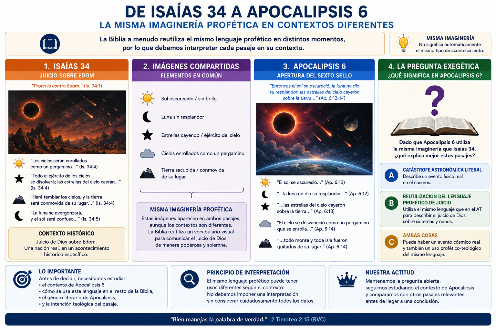
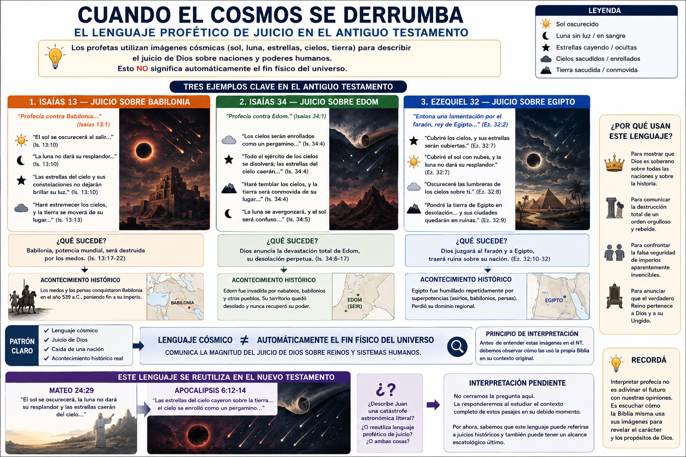
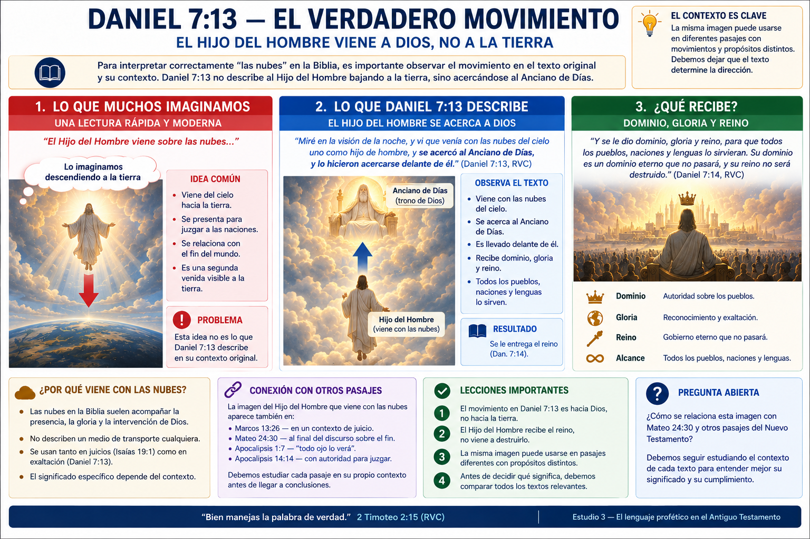
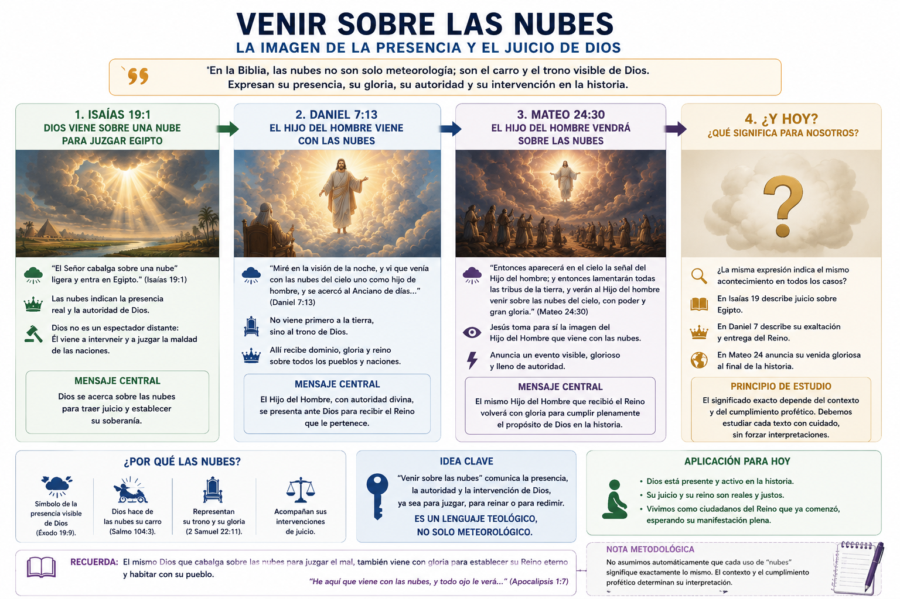
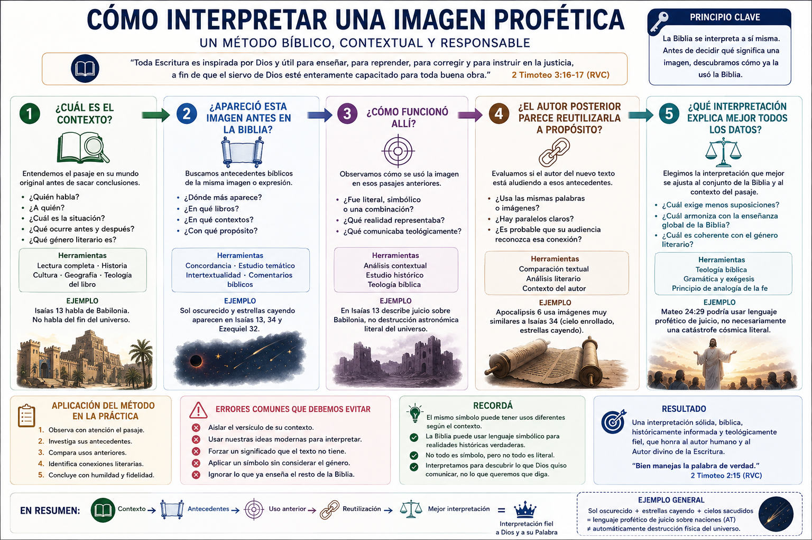
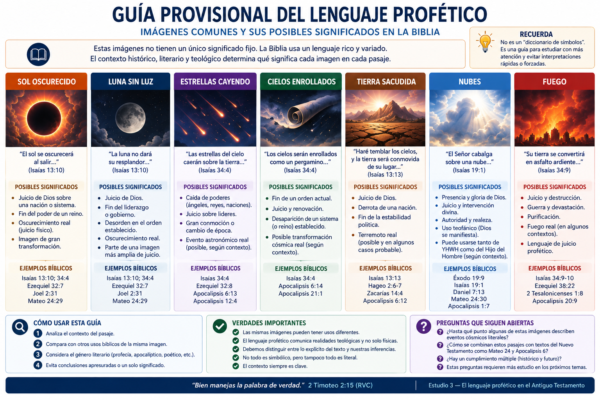

Este estudio es fundamental.
Cuando más adelante leamos:
“el sol se oscurecerá, la luna no dará su resplandor y las estrellas caerán del cielo...”
— Mateo 24:29
la interpretación que hagamos dependerá muchísimo de algo que tenemos que resolver antes de llegar a Mateo 24:
🤔 ¿Cómo utilizaba la propia Biblia ese lenguaje antes de Jesús?
Hoy vamos a descubrir que expresiones que a nosotros nos parecen describir el fin físico del universo ya aparecen en el Antiguo Testamento para describir acontecimientos históricos.
Y esto nos dará una regla importantísima:
📖 Antes de preguntarnos qué imagen moderna podría corresponder a una profecía, debemos preguntar dónde utilizó anteriormente la Biblia esa misma imagen.
Al terminar deberíamos comprender:
Esta última advertencia será importante.
Imaginemos que nunca hemos leído el Antiguo Testamento y encontramos esto:
“Las estrellas del cielo y sus constelaciones no dejarán brillar su luz; el sol se oscurecerá al salir, y la luna no dará su resplandor.”
¿Qué pensaríamos?
Probablemente:
☀️ Sol apagándose 🌙 Luna dejando de reflejar luz ⭐ estrellas desapareciendo 🌎 catástrofe cósmica
y concluiríamos:
“Esto debe describir el fin del mundo.”
Perfectamente comprensible.
Pero acabo de citar Isaías 13:10.
¿Y sabés qué está profetizando Isaías?
No el fin del planeta.
Está anunciando:
Leamos el contexto.
Isaías comienza:
“Profecía contra Babilonia...”
— Isaías 13:1
Esto es importantísimo.
Tenemos identificado al destinatario:
Después aparecen ejércitos, destrucción y el:
“Día del Señor”.
Isaías 13:6.
Y entonces aparece el lenguaje cósmico.
☀️ sol oscurecido 🌙 luna sin luz ⭐ estrellas oscurecidas.
Pero continúa.
“Haré estremecer los cielos, y la tierra se moverá de su lugar...”
😳
Si aisláramos ese versículo podríamos imaginar:
PLANETA TIERRA
🌎💥
fuera de órbita.
Pero sigamos leyendo.
Isaías 13:17:
“Yo despertaré contra ellos a los medos...”
Ahí tenemos una referencia histórica.
Entonces la estructura es:
Babilonia
↓
⚔️ invasión
↓
🏛️ caída del imperio
y el profeta lo describe como:
☀️ sol oscurecido 🌙 luna sin luz ⭐ estrellas apagadas 🌌 cielos estremecidos 🌎 tierra movida.
🔥 Primer descubrimiento enorme:
El lenguaje de desintegración cósmica puede describir proféticamente la caída histórica de una potencia política.
No necesariamente significa:
“literalmente desapareció el Sol cuando cayó Babilonia.”
Porque los profetas no escribían como periodistas modernos.
Un periodista podría decir:
“Las fuerzas enemigas conquistaron Babilonia, provocando el colapso de su estructura política.”
Isaías puede describirlo como:
EL COSMOS DE BABILONIA SE DERRUMBA.
Porque para quienes viven dentro de un imperio:
👑 rey 🏛️ gobierno ⚖️ sistema político 💰 economía ⚔️ ejército 🌎 orden social
constituyen prácticamente su mundo.
Cuando todo eso colapsa:
“se terminó nuestro mundo.”
Nosotros todavía utilizamos expresiones parecidas.
Decimos:
“Se me vino el mundo abajo.”
Y nadie pregunta:
“¿A qué velocidad cayó el planeta?”
😂
Entendemos que estamos utilizando una imagen enorme para describir una realidad enorme.
Los profetas hacen algo semejante, pero con un lenguaje teológico mucho más elaborado.
Esto viene desde Génesis.
En Génesis 1 encontramos que Dios transforma:
desorden → orden
separando:
🌊 aguas 🌎 tierra 🌌 cielos
y estableciendo lumbreras:
☀️ sol 🌙 luna ⭐ estrellas.
El cosmos ordenado representa un mundo organizado bajo el gobierno de Dios.
Por eso los profetas pueden invertir esas imágenes para representar des-creación.
Cuando Dios juzga:
orden → caos
☀️ se oscurece ⭐ estrellas caen 🌎 tierra tiembla 🌌 cielos se enrollan.
No necesariamente porque el universo físico desaparezca, sino porque un orden establecido está siendo desmantelado bajo juicio.
Guardemos la palabra:
Nos aparecerá muchas veces.
Ahora leamos algo impresionante.
Isaías 34 anuncia juicio contra:
Isaías 34:5 menciona explícitamente:
“Edom”.
Pero observá cómo describe ese juicio.
“Todo el ejército de los cielos se disolverá...”
“los cielos serán enrollados como un pergamino...”
“todo su ejército caerá...”
Tenemos:
🌌 cielo desapareciendo 📜 cielo enrollándose ⭐ estrellas cayendo.
Si esto aparece aislado en una publicación de Internet:
😱 ¡Isaías predijo el fin del universo!
Pero el contexto identifica:
Edom.
Ahora empieza a ponerse interesante.
Apocalipsis 6:13-14 dice:
“las estrellas del cielo cayeron sobre la tierra...”
y:
“el cielo desapareció como un pergamino que se enrolla.”
🚨 Esperá.
Eso se parece muchísimo a:
Entonces cuando lleguemos a Apocalipsis 6 tendremos que preguntar:
¿Juan está describiendo literalmente la desaparición del espacio-tiempo?
Puede ser.
Pero ya no podremos simplemente asumirlo.
Porque sabemos que Juan está utilizando vocabulario profético que ya tenía historia.
Este es exactamente el tipo de conexión que utilizaremos durante todo el curso.

La respuesta la dejaremos abierta hasta estudiar Apocalipsis.
Pero ahora tenemos mejores preguntas.
Eso ya es progreso.
Tenemos un tercer ejemplo.
Dios habla mediante Ezequiel acerca del faraón de Egipto.
“Hijo de hombre, entona una lamentación por el faraón, rey de Egipto...”
Destinatario:
Después:
Dios dice que cuando apague a Egipto:
⭐ cubrirá las estrellas ☀️ cubrirá el Sol 🌙 la Luna no alumbrará 🌌 oscurecerá las lumbreras.
Otra vez:
juicio histórico sobre una nación
descrito mediante:
catástrofe cósmica.
Ya tenemos un patrón.
| Profecía | Juicio | Lenguaje |
|---|---|---|
| Isaías 13 | 🏛️ Babilonia | ☀️🌙⭐ |
| Isaías 34 | 🏔️ Edom | 🌌📜⭐ |
| Ezequiel 32 | 🇪🇬 Egipto | ☀️🌙⭐ |
Esto empieza a ser demasiado repetitivo como para ignorarlo.
Por tanto:
El lenguaje cósmico en la profecía bíblica no exige automáticamente un acontecimiento astronómico literal.
Puede funcionar como lenguaje de:
⚖️ juicio 🏛️ caída política 👑 caída de gobernantes 🌎 destrucción de un orden establecido.

Acá debemos evitar otro error.
Algunos intérpretes crean un diccionario rígido:
☀️ = rey 🌙 = reina ⭐ = gobernantes.
Y después aplican esa fórmula mecánicamente a cada profecía.
Eso tampoco es una buena metodología.
Los símbolos dependen del contexto.
A veces las estrellas pueden representar:
👼 seres celestiales;
otras veces:
👥 descendencia;
otras:
👑 gobernantes;
otras pueden formar parte simplemente de una imagen cósmica de juicio.
Entonces nuestra regla será:
❌ No crear un “diccionario universal de símbolos”.
Mejor:
✅ observar cómo funciona la imagen dentro de cada pasaje y dentro del conjunto bíblico.
Otra imagen frecuente:
la tierra tiembla.
Puede referirse a un terremoto real.
La Biblia conoce terremotos físicos.
Pero también puede utilizarse como imagen de la intervención divina.
Por ejemplo:
David describe cómo Dios lo libró de sus enemigos.
Dice:
“La tierra fue conmovida y tembló...”
— Salmo 18:7
Después:
💨 humo de Dios 🔥 fuego 🌌 cielos inclinándose ☁️ Dios descendiendo 👼 querubines ⚡ relámpagos.
¿Está David diciendo que literalmente vio a Dios volando físicamente sobre un querubín durante cada batalla?
El Salmo está utilizando lenguaje teofánico.
Es decir:
Necesitamos esta palabra.
Theos = Dios phainō = aparecer/manifestarse.
Una teofanía es una manifestación de Dios.
En la Biblia, la presencia divina frecuentemente viene acompañada de:
☁️ nubes ⚡ relámpagos 🔥 fuego 🌎 terremoto 📯 sonido 🌪️ tormenta.
Pensá en:
Éxodo 19.
Cuando Dios desciende:
🔥 fuego ☁️ nube 🌎 monte temblando 📯 trompeta.
Este vocabulario después se convierte en parte del lenguaje bíblico para describir la intervención de Dios.
Este punto será gigantesco cuando estudiemos Mateo 24.
En nuestra imaginación:
“Jesús viene sobre las nubes”
=
☁️☁️☁️ 👑 Jesús bajando físicamente 🌎 Segunda Venida.
Y efectivamente existen textos donde las nubes están relacionadas con el regreso de Cristo.
Pero debemos saber algo:
Isaías comienza:
“Profecía contra Egipto.”
— Isaías 19:1
Y después:
“El Señor cabalga sobre una nube ligera y entra en Egipto.”
😮
Tenemos:
☁️ YHWH cabalgando sobre una nube
↓
🇪🇬 entra en Egipto
↓
⚖️ juicio.
¿Tenemos registro histórico de los egipcios mirando hacia arriba y viendo físicamente a Dios sentado sobre una nube?
No es necesario entenderlo así.
Isaías está diciendo:
Dios viene en juicio contra Egipto.
Y utiliza el lenguaje del Guerrero Divino.
Jesús dice:
“verán al Hijo del Hombre viniendo sobre las nubes del cielo...”
— Mateo 24:30
Nuestra reacción inmediata podría ser:
Segunda Venida. Caso cerrado.
Pero después de Isaías 19 ya sabemos que:
venir sobre nubes
puede funcionar como lenguaje de:
⚖️ juicio divino.
Pero todavía falta algo muchísimo más importante.
Porque Jesús probablemente no está pensando principalmente en Isaías 19.
Está aludiendo a:
Y ahí ocurre algo que sorprende a mucha gente.
Daniel ve:
“uno como hijo de hombre, que venía con las nubes del cielo...”
Normalmente imaginamos:
CIELO
☁️ Jesús
⬇️
🌎 Tierra.
Pero leamos el movimiento completo.
Daniel 7:13 dice que viene:
“hasta el Anciano de días”.
😮
¿Dónde está el Anciano de Días en la visión?
En el tribunal celestial.
Entonces el movimiento de Daniel 7 es:

👑 dominio 🌎 gloria 🏛️ reino 👥 pueblos y naciones.
Esto será enormemente importante cuando estudiemos Mateo 24:30.
No vamos a resolverlo hoy.
Pero ya hemos identificado una conexión que tendremos que investigar.
En el AT, quien cabalga sobre las nubes es especialmente Dios.
Por ejemplo:
Dios hace de:
“las nubes su carro”.
Y encontramos lenguaje similar en otros textos.
Entonces cuando Daniel presenta a:
“uno como hijo de hombre”
viniendo con las nubes...
está atribuyéndole una imagen extraordinariamente elevada.
Y cuando Jesús toma para sí “Hijo del Hombre” + nubes, está haciendo una afirmación cristológica impresionante.
Escatología y cristología empiezan a cruzarse.

Joel también utiliza:
☀️ sol convertido en tinieblas 🌙 luna en sangre
en conexión con el Día del Señor.
Joel 2:31.
Y recordemos algo:
Pedro cita precisamente este pasaje en:
Hechos 2:19-20 incluye:
🔥 fuego 🌫️ humo ☀️ oscuridad 🌙 luna convertida en sangre.
Otra vez tenemos que preguntarnos:
¿Pedro esperaba literalmente que la Luna se transformara químicamente en sangre?
Probablemente estamos dentro del lenguaje profético del Día del Señor.
Pero todavía tenemos que estudiar específicamente qué significa “Día del Señor”.
Eso viene en el Estudio 5.
Esto merece una aclaración porque se ha popularizado muchísimo.
A veces se identifica:
“luna convertida en sangre”
con:
🌑 eclipse lunar.
Un eclipse puede verse rojizo.
Pero el hecho de que exista un fenómeno astronómico parecido no demuestra automáticamente que Joel estuviera prediciendo determinados eclipses modernos.
El contexto profético es mucho más importante que encontrar una semejanza visual.
Nuestra metodología nuevamente:
❌ fenómeno moderno → buscar profecía.
✅ profecía → contexto → uso bíblico → significado.
El fuego puede ser perfectamente literal.
Pero también es una de las grandes imágenes bíblicas de:
⚖️ juicio 🧹 purificación 🔥 presencia divina.
Por ejemplo, cuando los profetas hablan de ciudades siendo consumidas por fuego, puede existir simultáneamente:
realidad histórica literal + significado teológico.
Esto nos enseña algo importante:
Literal y simbólico no siempre son opuestos.
Un acontecimiento real puede ser descrito mediante simbolismo.
Por ejemplo:
🏛️ Babilonia realmente cayó.
Pero:
☀️ el Sol no necesitó apagarse literalmente.
La profecía comunica teológicamente la magnitud de ese acontecimiento.
Todavía no llegamos formalmente al género apocalíptico —lo estudiaremos cuando entremos en Daniel y Apocalipsis—.
Pero ya podemos reconocer algunas características.
El lenguaje profético puede ser:
Utiliza imágenes enormes.
Sol, luna, estrellas, cielo, tierra.
Reinos y gobernantes aparecen representados mediante imágenes.
Bestias, monstruos, cuernos.
Un profeta reutiliza imágenes de profetas anteriores.
Esta última será importantísima.
Necesitamos otra palabra.
Significa que un texto utiliza, recuerda o transforma otro texto anterior.
Por ejemplo:
Isaías
🌌 cielo enrollado
↓
Apocalipsis
🌌 cielo enrollado.
Juan espera que un lector familiarizado con las Escrituras reconozca:
“Yo conozco esa imagen.”
Es como una referencia dentro de una película.
Si conocés la obra anterior:
💡 entendés muchísimo más.
Por eso intentar interpretar Apocalipsis sin el Antiguo Testamento es una receta para terminar inventando cosas.
Aunque Apocalipsis rara vez introduce citas diciendo:
“como está escrito en Isaías...”
su lenguaje está saturado de imágenes procedentes de:
📜 Génesis 📜 Éxodo 📜 Salmos 📜 Isaías 📜 Ezequiel 📜 Daniel 📜 Joel 📜 Zacarías.
Por eso cuando lleguemos a Apocalipsis nuestra pregunta constante será:
🔎 “¿De dónde sacó Juan esta imagen?”
Muchas veces la respuesta estará en el AT.
Después de todo lo que acabamos de estudiar alguien podría concluir:
“Perfecto. Entonces nada escatológico es literal.”
🚨 No.
Eso sería exactamente el error contrario.
La Biblia también enseña acontecimientos futuros que debemos tomar como realidades:
☁️ Cristo regresará ⚰️ muertos resucitarán ⚖️ habrá juicio 🌎 creación será transformada.
Que la Biblia utilice lenguaje simbólico no significa que la realidad representada sea ficticia.
Un símbolo puede representar una realidad tremendamente concreta.
Ejemplo sencillo:
🦁
Jesús es llamado:
“León de la tribu de Judá.”
Apocalipsis 5:5.
Eso es simbólico.
Pero:
Jesús es real.
El símbolo comunica algo acerca de Él.
Esto merece quedar clarísimo.
A veces pensamos:
literal = verdadero
simbólico = inventado
No.
La Biblia puede comunicar verdad mediante:
📖 historia 🎵 poesía 🌾 parábola 🔮 profecía 🐉 símbolo 👁️ visión.
Cuando Apocalipsis presenta un dragón:
🐉
no necesitamos encontrar un reptil zoológico de siete cabezas para que el texto sea verdadero.
Tenemos que descubrir:
¿qué realidad representa el dragón?
Y Apocalipsis 12 incluso nos lo dice:
“la serpiente antigua, que se llama Diablo y Satanás.”
Símbolo:
🐉 dragón.
Realidad:
😈 Satanás.
A partir de hoy, cuando encontremos una imagen profética, haremos cinco preguntas.
¿Quién habla?
¿A quién?
¿Por qué?
Especialmente:
Antiguo Testamento.
¿Literal?
¿Simbólica?
¿Ambas?
Ejemplo:
Isaías 34 → Apocalipsis 6.
No preguntamos:
“¿Qué interpretación me gusta?”
sino:
“¿Cuál explica mejor todos los datos?”

No es un diccionario rígido, sino una guía:

La palabra importante debajo de todo esto es:
Supongamos que ahora leemos Mateo 24:29:
“el sol se oscurecerá, la luna no dará su resplandor, las estrellas caerán del cielo...”
Antes de este estudio podríamos haber dicho:
“Jesús está describiendo literalmente la destrucción astronómica del universo.”
Ahora sabemos que existe por lo menos:
“Jesús está utilizando lenguaje profético tradicional de juicio y caída de poderes.”
Y posiblemente:
“Está utilizando lenguaje profético que puede tener una realidad escatológica final detrás.”
Todavía no sabemos cuál.
🔥 Y justamente esa es la actitud correcta.
No estamos intentando demostrar preterismo.
No estamos intentando demostrar futurismo.
Estamos acumulando herramientas exegéticas.
Cuando lleguemos a Mateo 24, dejaremos competir las interpretaciones.
Los profetas utilizan lenguaje cósmico para describir juicios históricos sobre naciones.
Ejemplos:
Isaías 13 → Babilonia.
Isaías 34 → Edom.
Ezequiel 32 → Egipto.
“Sol oscurecido”, “estrellas cayendo” y “cielos sacudidos” no requieren automáticamente interpretación astronómica literal.
El lenguaje de las nubes está asociado con la presencia, autoridad y juicio divinos.
Autores del NT reutilizan lenguaje e imágenes del AT.
Mucho del lenguaje cósmico de Mateo 24 y Apocalipsis debe interpretarse a la luz de esos antecedentes proféticos.
Cuánto de Mateo 24 describe:
🏛️ año 70
vs.
☁️ Segunda Venida.
Todavía no lo resolvemos.
Después de estos primeros tres estudios ya tenemos tres principios:
✝️ La escatología comenzó con Cristo.
⏳ Los últimos días comenzaron en el siglo I.
🌌 El lenguaje cósmico no significa automáticamente el fin físico del universo.
Notá algo importante:
Todavía no utilizamos el preterismo para llegar a estas conclusiones.
Llegamos leyendo:
Isaías Ezequiel Joel Daniel Hebreos Hechos Pablo Juan.
Eso es exactamente lo que quería conseguir con estos primeros módulos:
Construir las herramientas antes de entrar en las controversias.
Porque el juicio de Dios no es un acontecimiento trivial.
Cuando un imperio que parecía:
🏛️ eterno ⚔️ invencible 👑 todopoderoso
cae bajo el juicio divino, el profeta dice prácticamente:
“Su cielo cayó.”
Desde la perspectiva humana:
Babilonia gobierna el mundo.
Desde la perspectiva profética:
Babilonia es solamente otra potencia temporal bajo la soberanía de Dios.
Eso también contiene un mensaje escatológico precioso.
Todos los imperios terminan.
Todos los gobernantes terminan.
Todos los sistemas humanos terminan.
Pero:
“su reino es un reino eterno”.
— Daniel 7:27
Y ahí empezamos a comprender por qué Daniel y Apocalipsis utilizan semejante lenguaje.
1. ¿Qué nación está siendo juzgada en Isaías 13?
👉 Babilonia.
2. ¿Qué ocurre con el Sol, Luna y estrellas en esa profecía?
👉 Son oscurecidos dentro del lenguaje cósmico del juicio.
3. ¿Eso obliga a interpretar que ocurrió una catástrofe astronómica literal?
👉 No.
4. ¿Qué nación aparece en Isaías 34?
👉 Edom.
5. ¿Qué imagen de Isaías 34 reaparece en Apocalipsis 6?
👉 El cielo enrollándose y la caída de las estrellas.
6. ¿Qué significa que Dios venga sobre una nube en Isaías 19?
👉 Intervención/juicio divino contra Egipto.
7. ¿Daniel 7 presenta al Hijo del Hombre descendiendo directamente hacia la Tierra?
👉 No. En la visión se acerca al Anciano de Días para recibir dominio y Reino.
8. ¿Eso demuestra que Mateo 24:30 no habla de la Segunda Venida?
👉 No. 🟠 Solamente demuestra que debemos estudiar Daniel 7 antes de decidirlo.
Esta última respuesta es probablemente la más importante del examen.
### 📖 Cuando los profetas dicen que el cielo cae, primero debemos preguntar qué “mundo” está siendo juzgado antes de asumir que están describiendo la destrucción física del universo.
✅ Estudio 1 — ¿Qué es la escatología?
✅ Estudio 2 — ¿Qué significa “los últimos días”?
✅ Estudio 3 — El lenguaje profético
⬜ Estudio 4 — Profecía literal, simbólica y tipológica
⬜ Estudio 5 — El Día del Señor
⬜ Estudio 6 — Las “venidas” de Dios en juicio
Y el Estudio 4 será la continuación perfecta de este.
Porque ahora sabemos que la Biblia utiliza símbolos. Pero aparece inmediatamente un problema:
🤔 ¿Cómo sabemos cuándo interpretar algo literalmente y cuándo simbólicamente?
Si simplemente respondemos “cuando parece simbólico”, podemos hacer que la Biblia diga cualquier cosa.
Así que el próximo estudio va a establecer criterios concretos para distinguir literalidad, símbolo, metáfora, tipo y cumplimiento profético, con ejemplos bíblicos. Esa herramienta será indispensable antes de tocar Daniel y Apocalipsis.